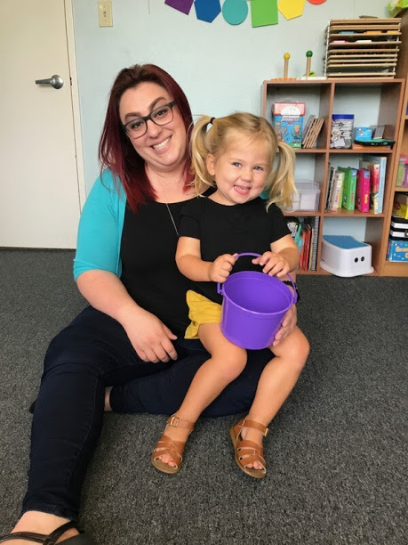
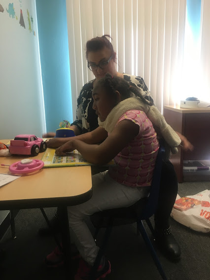
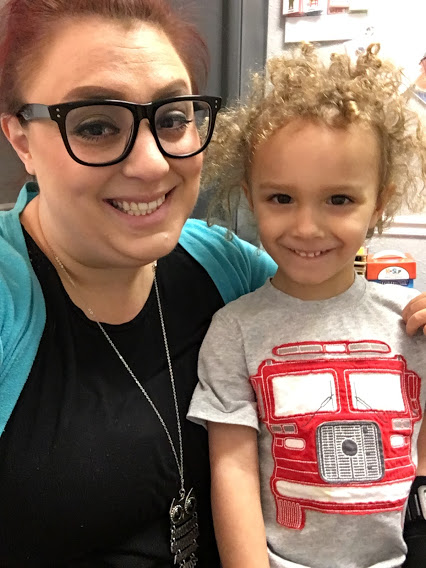
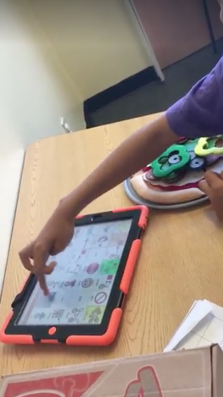
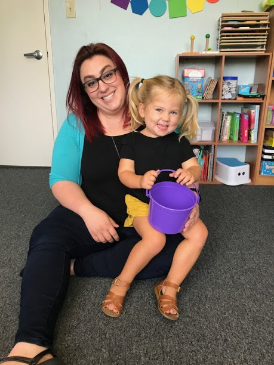
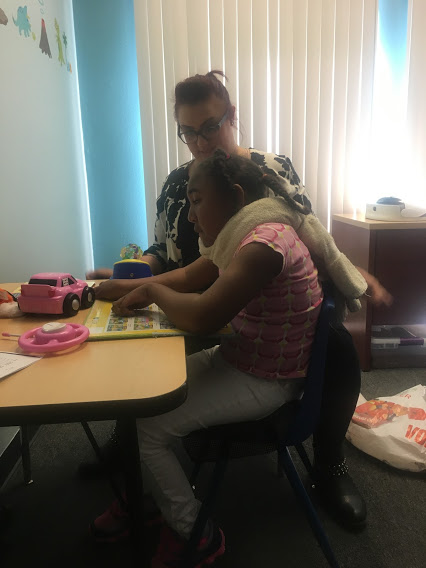
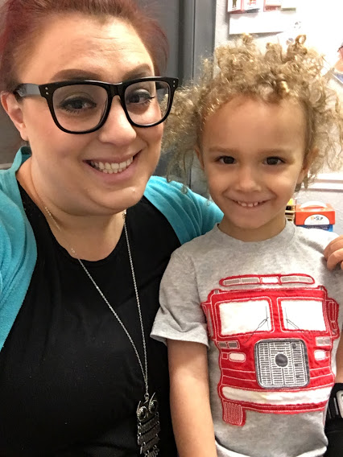
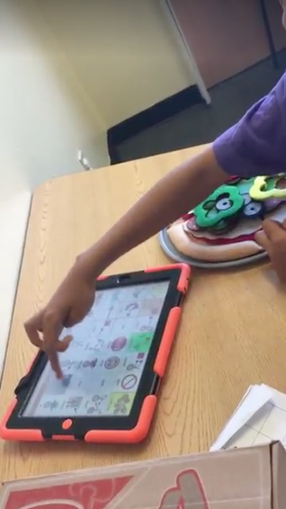

"My son received speech therapy from Casey Rockmore from when he was 2 years old to when he was 5 years old. Casey is a wonderful speech therapist. She is very knowledgeable and friendly. Her work through play-based therapy techniques made learning so much fun and easy for my son who is on the Autism Spectrum. I would recommend Casey’s services to anyone looking for a smart, warm, and personal speech therapist."
- Millie P., son age 5
"We have loved going to speech with Casey. She works with both my 5-year-old with Autism and also my 2-year-old who has speech delays. Both children love her and work well with her. They have shown improvements and they are taking lessons they've learned home. She is very friendly, outgoing, and a great speech therapist that we would highly recommend."
- Holly S., sons age 5 and 2
"My son Daniel had the privilege of being with Casey for 2 years. He came to Casey and he was only producing sounds. His voice was his tablet. Even though he was amazing on his tablet, that was his voice. No voice from his sweet mouth. As a parent who had a child who was non verbal, you crave to hear just one word, or the most important “I love you.” I didn’t know what to expect coming to Casey. It was one of the smartest decisions I have ever made in my life. Casey really thought outside of the box. I have never seen so much passion and knowledge from a therapist in my life and I have been through many therapists before. Casey blew my mind. She started with the physical PROMPT method which was key for Daniel. I was so thankful she had training in that. Over the course of a couple months, my son was speaking simple words, then phrases, and now full sentences. My son no longer uses his tablet to communicate. He has a voice of his own. If anyone has the privilege to have their child seen by Casey, I would say you are extremely lucky. Therapists like Casey don’t come around often. They are once in a lifetime. I will forever be grateful for Casey. My son will too. Daniel is a definite success story! Thank you Casey!! You helped change our lives!""
- Ginny L., son age 7
"Casey is an amazing therapist. She has helped my son, who has been diagnosed with ASD and developmental delays. She not only helped him but helped us through many things as a family."
- Amanda M., son age 5
"Casey was more than we could have asked for. We were working with another therapist before Casey came into our lives. While our son grew greatly with our previous SLP, the love, care, and attention Casey showed William was above and beyond. I saw huge leaps and bounds in the time we were working with her. When it came time for graduation from therapy, it was bittersweet. We were so proud of William for getting to where he was at but so sad to leave Casey. William still talks about Miss Casey and going to speech. She creates the most welcoming and fun environment that helps children thrive. I don’t know what we would have done without her."
- Danielle A., son age 3
 






